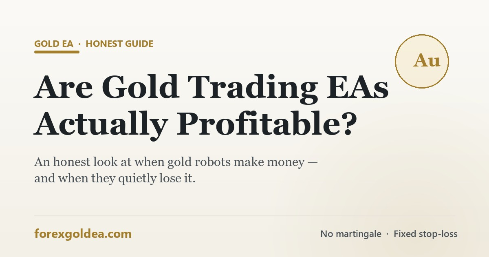

Are gold trading EAs actually profitable? An honest look

It's the question everyone asks before buying or downloading a gold robot: do these things actually make money? You'll find screenshots promising 300% a year on one side and "all EAs are scams" on the other. The truth sits in between — so here's an honest, hype-free answer.
The honest answer: it depends — and here's on what
“Are gold EAs profitable?” is like asking “are businesses profitable?” Some are excellent, most struggle, and the outcome depends far more on how the EA is built and used than on the fact that it's automated. Three things decide it: the quality of the strategy, the discipline of its risk management, and the conditions it runs in (your broker, spreads and the market itself).
Automation is not an edge by itself. A robot simply executes a plan faster and without emotion — so a good plan is executed well, and a bad plan loses money automatically. That single idea explains almost everything about EA profitability.
When gold EAs ARE profitable
Profitable gold EAs tend to share the same traits:
- A defined, rule-based strategy — clear entry and exit logic, not a black box.
- A hard stop-loss on every trade — risk is capped and known in advance.
- Small risk per trade — typically 1–2% of the account, so a losing streak is survivable. See how to set risk per trade on a gold EA.
- A suitable broker — tight XAU/USD spreads and fast execution, because costs eat thin edges.
- Realistic expectations — steady, modest growth with drawdowns, not a straight line up.
When those boxes are ticked, a gold EA can grow an account steadily over time. What it will never do is turn $100 into $10,000 in a month without the risk of losing the lot.
Why most gold EAs lose money
The failures are remarkably consistent:
| Reason | What goes wrong |
|---|---|
| Martingale / grid | Doubles down on losers with no stop-loss; one strong trend wipes the account. See martingale grid EAs explained. |
| Over-fitted backtests | Tuned to look perfect on past data, then falls apart on new data. |
| Trading costs | Spread, slippage and swap quietly erase a small edge, especially on gold. |
| No risk control | Over-sized lots turn a normal losing streak into a blow-up. |
| Fantasy marketing | “Guaranteed profit” claims set expectations that no real system can meet. |
Notice that most of these are about risk and costs, not the entry signal. That's the part beginners underestimate — and the part that decides profitability.
Backtest profit vs live profit: the gap
A beautiful backtest is the easiest thing in trading to produce and the most misleading. Backtests can't perfectly model real spread, slippage and news gaps, and it's trivial to over-optimise a strategy so it fits the past. That's why a robot can show a flawless backtest and still lose live.
How to judge if a gold EA is really profitable
- Ask for a live verified record (e.g. Myfxbook), not screenshots — covering months, not weeks.
- Look at the worst drawdown, not the peak return. A 60% drawdown is a countdown timer.
- Confirm a hard stop-loss exists on every trade.
- Check the risk per trade — small and fixed, not “dynamic recovery”.
- Read the marketing honestly — any guarantee of profit is a red flag.
If you want a worked example of applying these filters, see our pick for the best XAUUSD EA in 2026.
How ForexGoldEA approaches profitability
We built ForexGoldEA around the traits above rather than around a marketing promise. It uses a defined, rule-based strategy on XAU/USD, avoids martingale and grid entirely, and places a fixed stop-loss and take-profit on every trade, so your risk is known before you enter. You control the risk settings, and the logic is explained plainly in our gold EA strategy breakdown.
What we won't do is promise guaranteed profit. Our results are backtested and the strategy is designed to be sustainable, but live outcomes depend on market conditions, your broker and your risk settings. The honest path is the same one we'd give a friend: test it on a demo account, start small, and let real behaviour — not a sales page — earn your trust.
Realistic expectations
A well-run gold EA aims for consistency: capturing moves with controlled risk, surviving losing streaks, and compounding modestly over time. It will have losing days, weeks and drawdowns — that's normal, not a malfunction. Judge it over months, not trades, and never trade with money you can't afford to lose. For sizing your account sensibly, see how much money you need to run a gold EA.
Frequently asked questions
Are gold trading EAs profitable?
Some are and many aren't. A gold EA can be profitable with a sound rule-based strategy, real risk control, a tight-spread broker and realistic expectations. Most failures come from martingale, over-fitted backtests, high costs or no stop-loss. There's no guaranteed profit.
Can you make a living from a gold EA?
It's very hard and unrealistic for most, especially from a small account. Treat a gold EA as a disciplined tool, not guaranteed income. Consistent small-risk trading beats chasing fast riches.
Why do most forex and gold robots fail?
Martingale blow-ups, over-fitted backtests, trading costs that erase a thin edge, and no proper risk management. Guaranteed-profit marketing is a warning sign.
How can I tell if a gold EA is really profitable?
Check a live, third-party-verified track record (like Myfxbook) over several months, including its worst drawdown, plus a hard stop-loss and small fixed risk per trade. Judge live behaviour, not backtests.
Is ForexGoldEA profitable?
ForexGoldEA is a rule-based, non-martingale gold EA with a fixed stop-loss on every trade, so risk stays defined. We don't promise guaranteed profit — results depend on conditions, broker and risk settings. Test on demo first and size risk carefully.
Bottom line
Are gold trading EAs profitable? Some genuinely are — the ones with a real strategy, disciplined risk control and honest expectations. Most aren't, because they chase martingale profits or beautiful backtests instead of controlling risk and costs. Automation doesn't create an edge; it executes one. Judge any gold EA by verified live results and its worst drawdown, test on demo first, and treat it as a tool — not a promise.
Affiliate disclosure: we earn a commission when you open and fund an account through our partner links, at no extra cost to you.